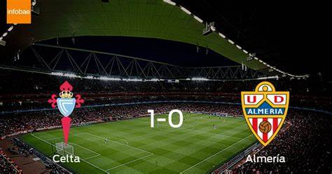

El Almería tiene como único objetivo no terminar la temporada sin victorias
Ya son 27 las jornadas que lleva el Almería sin vencer en esta Liga y 30 desde la última victoria en la temporada pasada,
a tan solo dos partidos de igualar el récord histórico de las cinco grandes ligas que posee el Derby County inglés con 32 partidos
consecutivos sin conocer la victoria.
Además, también se está jugando no terminar con la peor puntuación de un equipo en una temporada en la Liga española, que hasta ahora
tiene el Sporting de Gijón de la 97/98, que acabó con 13 puntos. Es decir, el Almería (9 puntos) tiene que sumar 5 más en estas últimas
once jornadas para no romper otro récord histórico negativo más.
